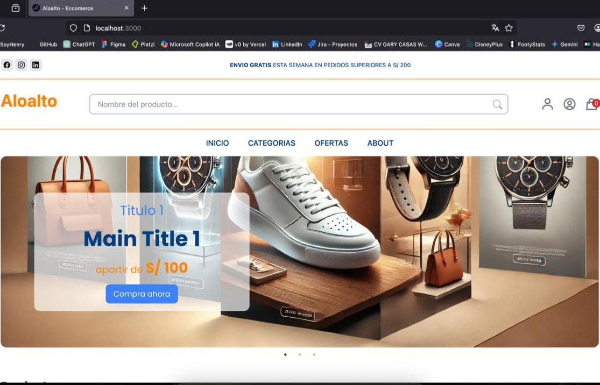

Visión estratégica
Conecto objetivos comerciales con decisiones de diseño y desarrollo para acelerar crecimiento, retención y conversión.
Frontend Developer · UX/UI · Growth
Integro desarrollo frontend, diseño UX/UI, estrategia de Ads y testing para que cada producto digital no solo se vea bien: venda, escale y se sostenga en el tiempo.
Sobre mí
Trabajo en la intersección entre negocio, experiencia de usuario y ejecución técnica para transformar ideas en productos digitales que generan resultados medibles.
Conecto objetivos comerciales con decisiones de diseño y desarrollo para acelerar crecimiento, retención y conversión.
Desde Lima, Perú, colaboro en proyectos remotos y presenciales con equipos locales e internacionales.
Combino Frontend, UX/UI, Ads y Testing en un solo flujo de trabajo para reducir fricción y aumentar velocidad de entrega.
Mis servicios
Diseño, desarrollo y optimizo experiencias que convierten tráfico en oportunidades comerciales sostenibles.
Arquitecturas UI escalables con foco en rendimiento, mantenibilidad y una experiencia sólida en todos los dispositivos.
Interfaces claras, atractivas y persuasivas que mejoran la percepción de marca y guían acciones de alto valor.
Integración de métricas, eventos y optimización de campañas para alinear adquisición con objetivos de negocio.
Validación funcional y automatizada para lanzar con confianza, reducir errores y sostener calidad en producción.
Proyectos
Cada proyecto está pensado para entregar valor real: más claridad, mejor experiencia y mayor capacidad de conversión.
Desarrollo Web + Growth
Plataforma de alto dinamismo con experiencia en tiempo real, optimizada para engagement y trazabilidad de campañas.
Ver proyectoSEO + UX Performance
Desarrollo enfocado en búsqueda eficiente, navegación intuitiva y estructura técnica orientada al posicionamiento orgánico.
Ver proyectoProducto Digital
Solución enfocada en una experiencia móvil fluida, rutas de compra claras y arquitectura frontend escalable.
Ver proyecto
Full Funnel Experience
Implementación orientada a rendimiento, UX de compra y métricas clave para escalar resultados de negocio.
Ver proyectoHabilidades
Resumen profesional
2024 - 2025
Entrenamiento intensivo en arquitectura de aplicaciones web y prácticas modernas para construir productos robustos.
2024
Profundización en diseño adaptable, accesibilidad y experiencia consistente en múltiples dispositivos.
2010 - 2015
Base sólida en análisis financiero, gestión y toma de decisiones orientadas al rendimiento.
3 años
Diseño y desarrollo de interfaces de alto desempeño, aplicando UX/UI, SEO técnico y criterios de usabilidad para mejorar experiencia y rendimiento digital.
8 años
Gestión de cartera superior a S/3 millones y liderazgo de equipo comercial con foco en cumplimiento de metas y crecimiento sostenible.
Contacto
Si buscas ejecución técnica, criterio de diseño y enfoque comercial en un mismo perfil, conversemos.